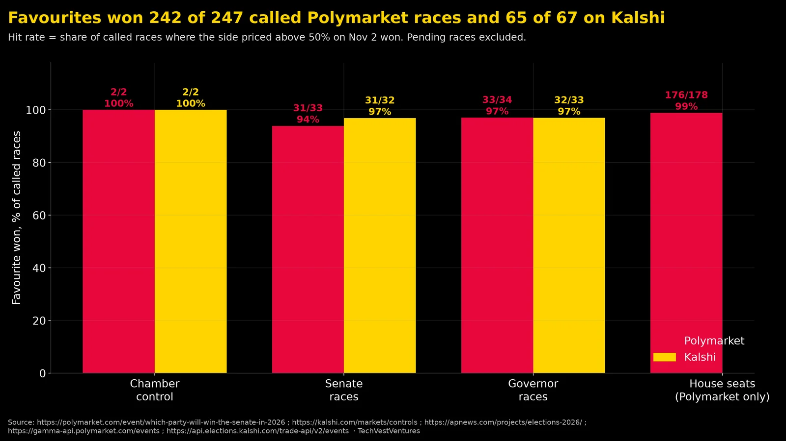
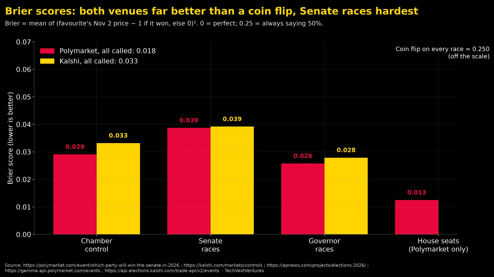
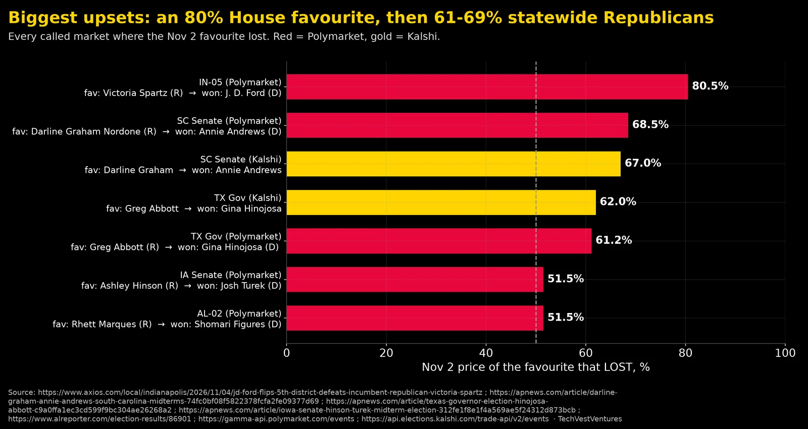

ScorecardTVV RISK CENTER
Polymarket and Kalshi prices captured Nov 2, 2026 at 5:02 PM ET, scored against AP calls and market resolutions as of about 1 PM ET Nov 4. House seat results are provisional (Polymarket-resolved; AP had many House races uncalled).

Source: https://polymarket.com/event/which-party-will-win-the-senate-in-2026 https://kalshi.com/markets/controls https://apnews.com/projects/elections-2026/ https://gamma-api.polymarket.com/events https://api.elections.kalshi.com/trade-api/v2/events

Source: https://polymarket.com/event/which-party-will-win-the-senate-in-2026 https://kalshi.com/markets/controls https://apnews.com/projects/elections-2026/ https://gamma-api.polymarket.com/events https://api.elections.kalshi.com/trade-api/v2/events

Source: https://www.axios.com/local/indianapolis/2026/11/04/jd-ford-flips-5th-district-defeats-incumbent-republican-victoria-spartz https://apnews.com/article/darline-graham-annie-andrews-south-carolina-midterms-74fc0bf08f5822378fcfa2fe09377d69 https://apnews.com/article/texas-governor-election-hinojosa-abbott-c9a0ffa1ec3cd599f9bc304ae26268a2 https://apnews.com/article/iowa-senate-hinson-turek-midterm-election-312fe1f8e1f4a569ae5f24312d873bcb https://www.alreporter.com/election-results/86901 https://gamma-api.polymarket.com/events https://api.elections.kalshi.com/trade-api/v2/events